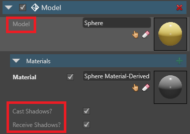
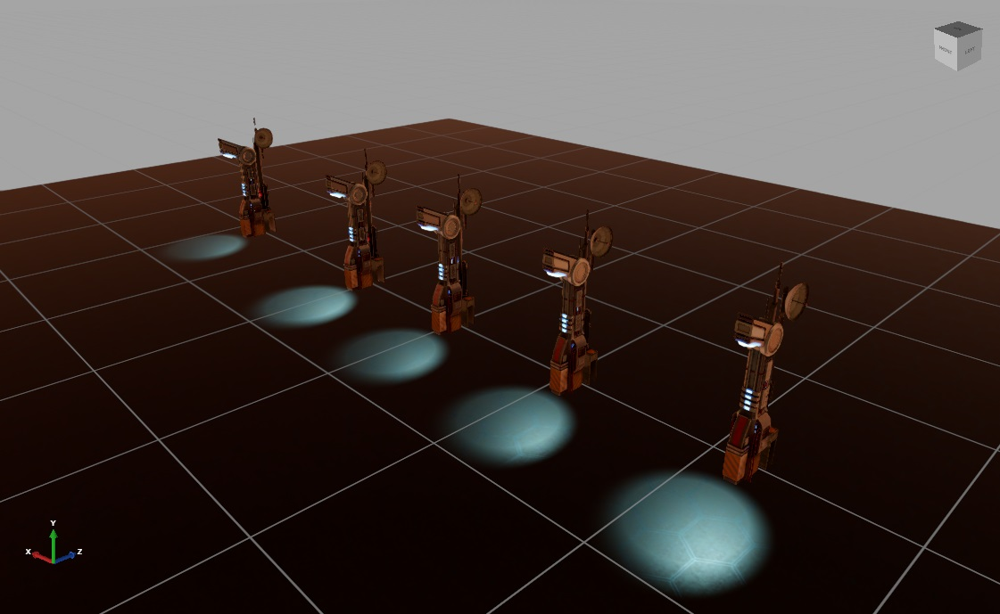

Override prefab properties
Intermediate Programmer Designer
If you modify a property in a prefab instance, the instance no longer inherits changes from the prefab for that property. This is called an override.
In the following video, the Lamp prefab contains several box entities that belong to the Boxes parent. When we delete the boxes from the instance, only that instance is affected. The prefab (shown on the right) is unchanged.
If we add another box to the Boxes parent in the prefab, it doesn't appear in the overridden instance. That's because we deleted the Boxes parent from that instance.
View overridden properties
In the Property Grid, you can see which properties of the prefab instance differ from the base values in the prefab.
Overridden and unique properties are white and bold:

Identical properties are gray:

Reset a property to the prefab value
To reset an overridden property to the value in the parent prefab, right-click the property and click Reset to base value.

Example
In this example, we have a prefab of a futuristic lamppost.

The lamppost prefab is composed of three entities: a column, a pillar, and a spot light. These are listed in the Entity Tree in the Prefab Editor.

Let's add five instances of the lamppost prefab to our scene.

Now we'll modify one of the instances. In the Scene Editor, we select one spot light entity and, in the spot light component properties, change its color to red. The Property Grid displays the modified Color property in bold white. This means it's overriding the prefab property.
We can see this in the scene view.

Now let's see what happens when we go back to the Prefab Editor and change the color of the spot light in the prefab to green.

Four of the lampposts now have a green light. The fifth is still red, as overridden properties don't change when you modify the prefab.